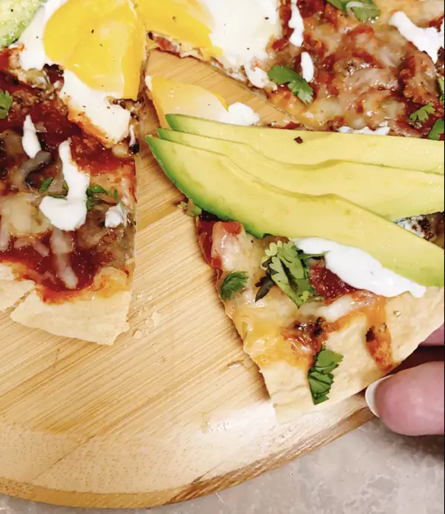

Simple Southwestern Breakfast Pizza

This breakfast pizza is done in under 30 minutes and would be perfect for an addition to brunch.
Ingredients
- ≈3 beef sausage patties
- ≈1 large flour tortilla
- ≈½ cup shredded asadero cheese, divided
- ≈⅓ cup salsa
- ≈1 medium egg
- ≈4 slices avocado, or to taste
- ≈1 tablespoon chopped fresh cilantro, or to taste
- ≈1 tablespoon crema con sal (salted Mexican-style sour cream)
- ≈1 pinch freshly ground black pepper to taste
Directions
- Preheat the oven to 350 degrees F (175 degrees C).
- Crumble sausage into a large skillet and cook until browned over medium-high heat, about 5 minutes.
Drain grease and remove browned beef to a plate. Clean out skillet.
- Place flour tortilla into the skillet.
Sprinkle 1/2 of the asadero cheese onto the tortilla and spread salsa over the cheese.
Top with sausage crumbles and remaining cheese.
- Crack open the egg and carefully add to the middle of the pizza; cook for 12 minutes.
- Top pizza with avocado slices, chopped cilantro, crema con sal, and black pepper.